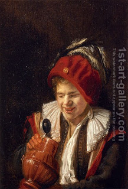

Bava Kamma 116 - Saving Your Friend's Honey by Loosing Your Wine

One was with a barrel of wine, the other with a jug of honey, and the barrel of honey cracked. If the wine owner poured out his wine and saved the honey - he receives only the laborer's fee. If he said, "I will save your honey, but you must pay me for my wine" - the other is obligated to pay.
But compare this to the one fleeing from a prison, who can promise the ferryman an inordinate amount for taking him over the river, and then say, "Just kidding" and pay only the fair? - That's different, because the ferryman looses only his time.